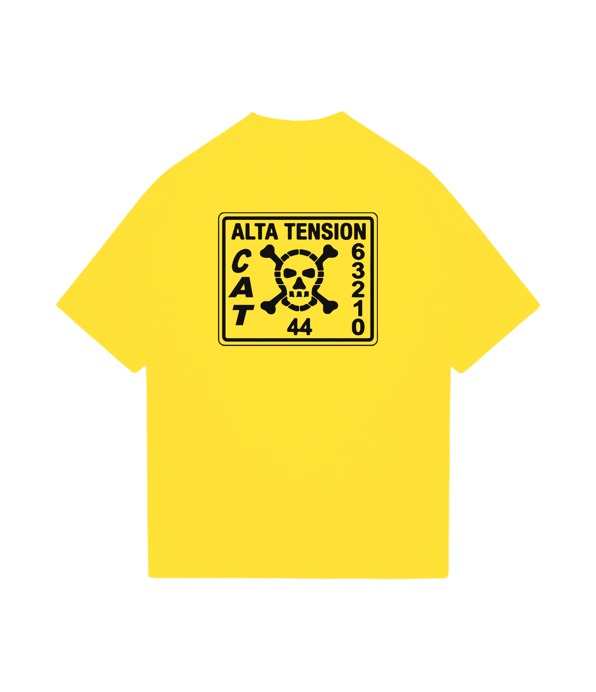
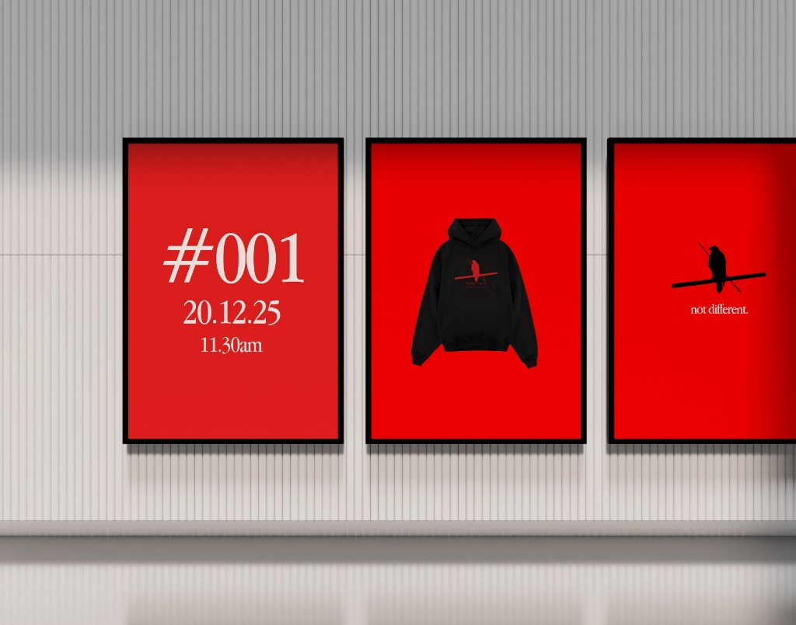
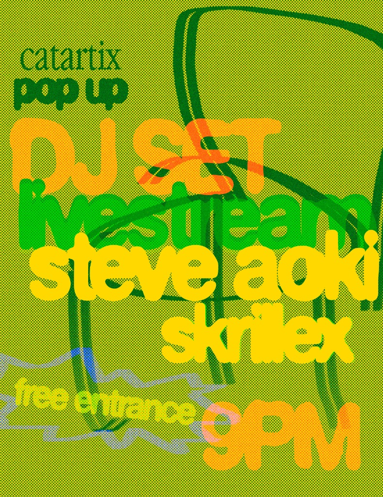
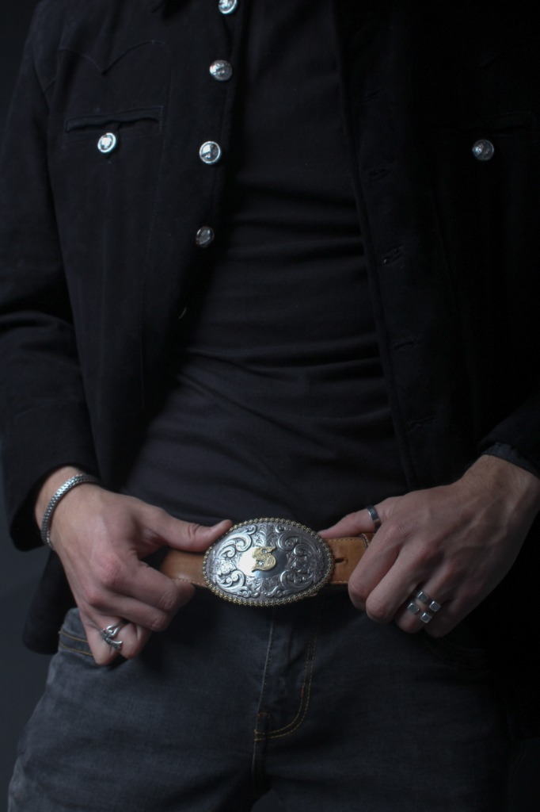
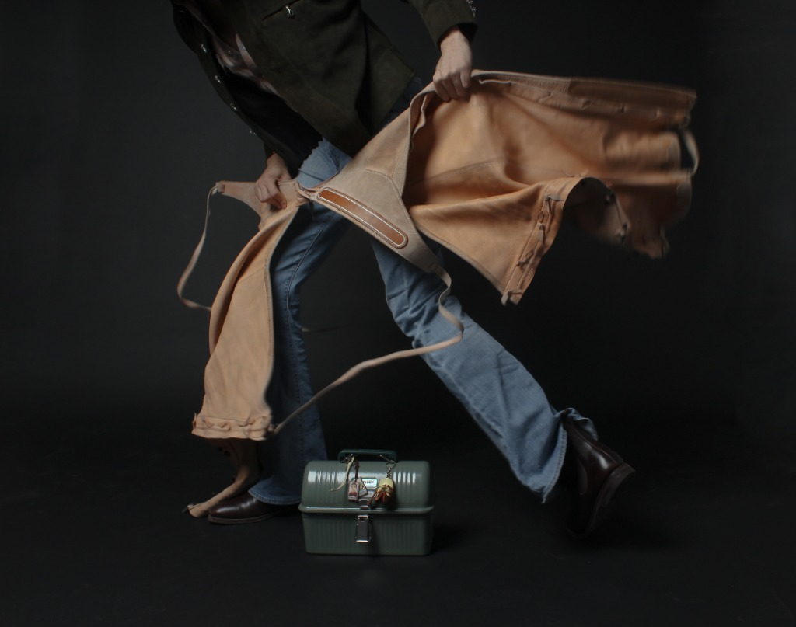
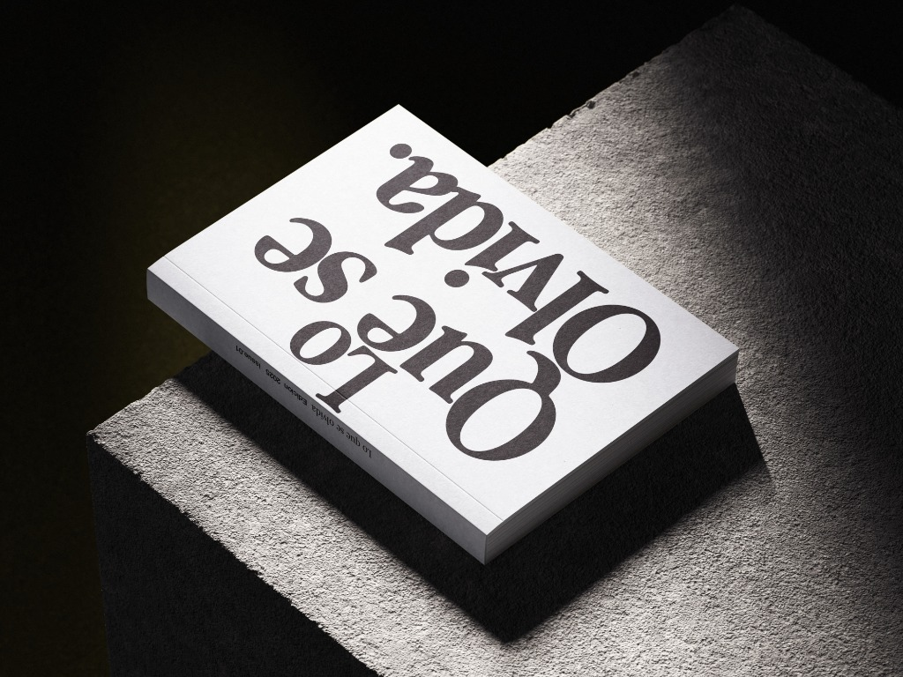
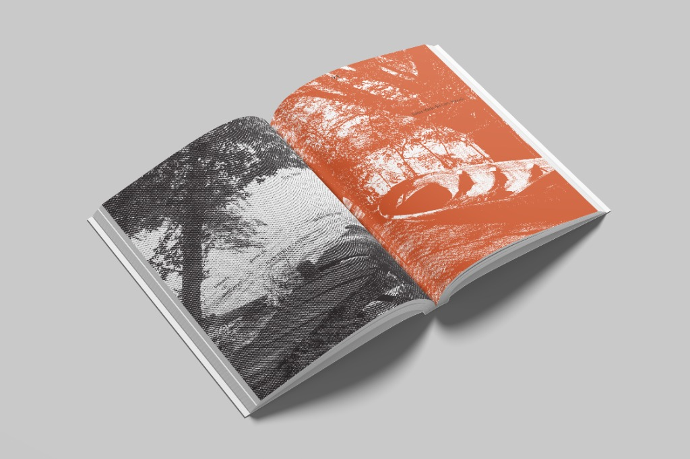
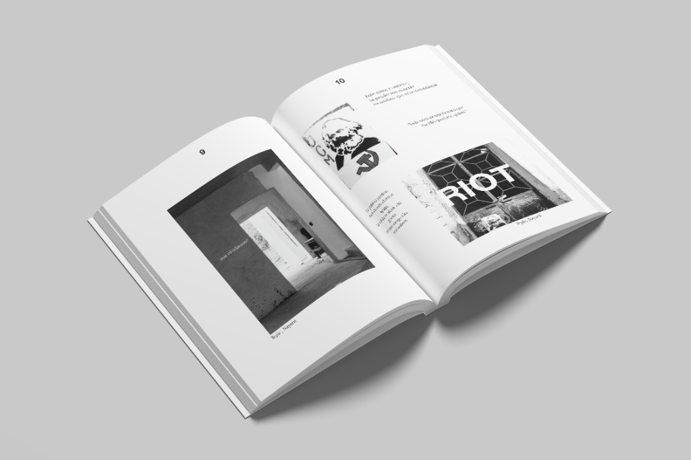
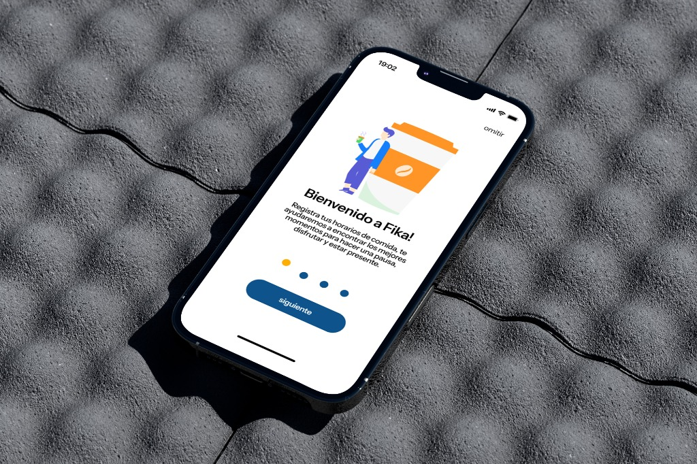
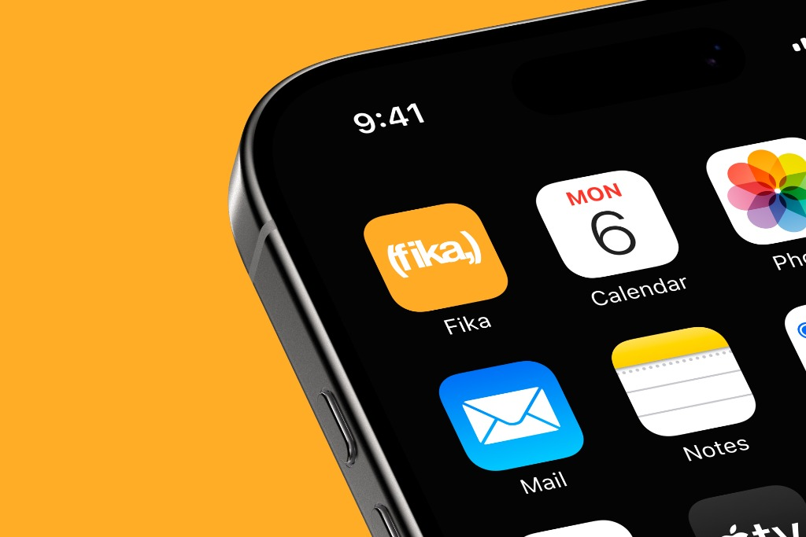

01 — Trabajo
— casos de estudio
N°
Proyecto
Año
Categoría
Stack
01
2025
Identidad / Indumentaria
Diseño Gráfico · Textil
Alta Tensión
Exploración de identidad gráfica aplicada a indumentaria. Lenguaje visual crudo inspirado en señalización industrial y simbología de peligro como vehículo estético.

02
2025
Branding / Identidad
Diseño Gráfico
Not Different
Una exploración de branding e identidad para marca.

03
2025
Cartelismo / Evento
Diseño Gráfico
Catartix Pop Up
Póster para evento musical. Exploración gráfica experimentando con alto contraste de colores y texturas de semitono.

04
2025
Fotografía / Editorial
Dirección de Arte
Producción Editorial I
Dirección de arte y fotografía para producción editorial. Exploración visual de estética de moda y lifestyle.

05
2025
Fotografía / Editorial
Dirección de Arte
Producción Editorial II
Segunda parte de la serie fotográfica, centrada en composición visual, indumentaria y detalles en los accesorios.

06
2025
Diseño Editorial / Libro
Photoshop · Illustrator · InDesign
Editorial Libro
Diseño editorial y maquetación conceptual de un libro. Proyecto experimental enfocado en la estructura de retículas, jerarquía tipográfica y composición espacial del contenido.

07
2025
Diseño Editorial
Adobe Illustrator
Editorial Libro 2
Exploración de técnicas avanzadas en Illustrator aplicadas al diseño editorial. Retículas, semitono, paleta cromática restringida y tratamiento de imagen como sistema visual coherente.

08
2025
Diseño Editorial
Adobe Illustrator
Editorial Libro 3
Segunda exploración del proyecto editorial. Paleta cromática restringida — naranja quemado y negro — sobre imágenes de semitono. Textura, contraste y ritmo visual como lenguaje propio.

09
2024
Identidad & UX/UI
Figma
Fika
Desarrollo de identidad y de onboarding de UX/UI para una aplicación.

10
2024
Identidad / Logo
Figma / Illustrator
Logo Fika
Desarrollo del logotipo e identidad visual base para la aplicación de Fika.
